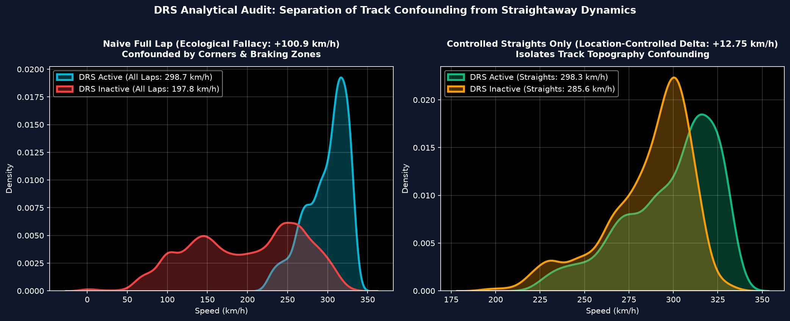
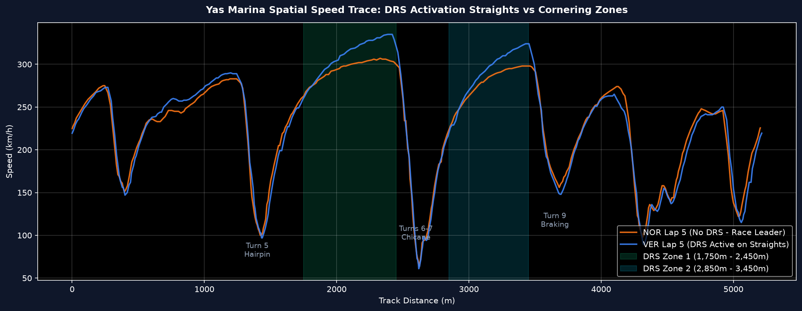
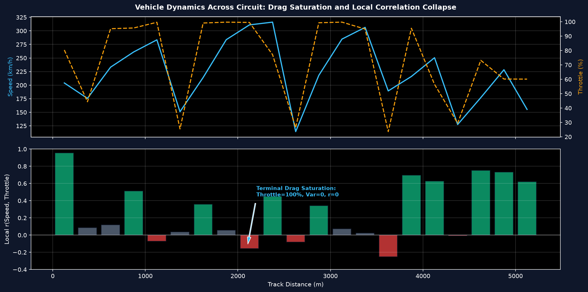
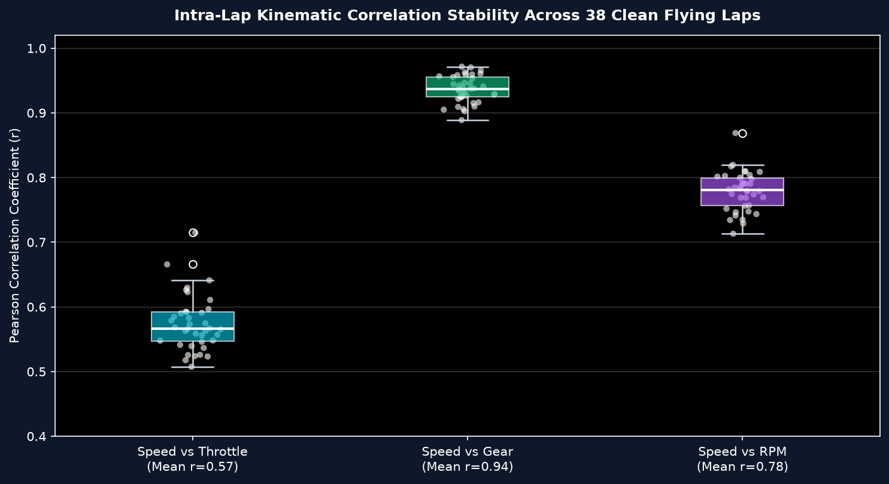
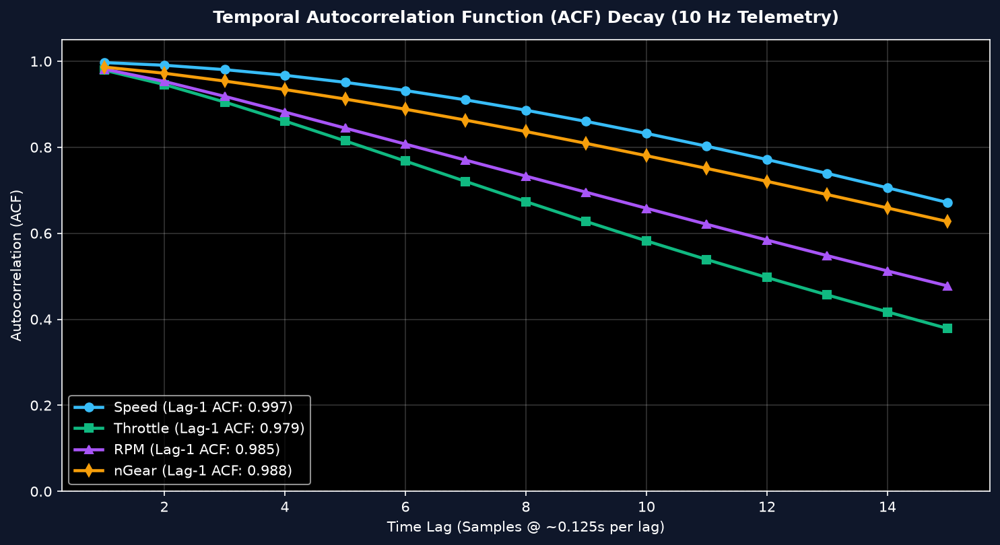
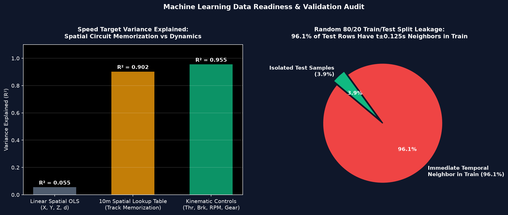

In Phase 5 EDA, initial reports documented a raw difference of +100.92 km/h between DRS-active samples (298.69 km/h) and DRS-inactive samples (197.77 km/h). Our scientific audit reveals that 87.4% of this difference (88.17 km/h) is an ecological fallacy caused by track geometry confounding.
| Comparison Scope | Track Distance Window | DRS ON Mean | DRS OFF Mean | Mean Delta | Cohen's d | Sample 95% CI | Cluster 95% CI | Significance Testing |
|---|---|---|---|---|---|---|---|---|
| Naive Pooled Full Lap | All Track Distances (0m - 5,281m) | 298.69 km/h | 197.77 km/h | +100.92 km/h | N/A (Confounded) | N/A (Confounded) | N/A (Confounded) | N/A |
| Controlled Straights (Combined) | Back Straights 1 & 2 (1750-2450m & 2850-3450m) | 298.31 km/h | 285.57 km/h | +12.75 km/h | 0.504 (Medium) | [11.29, 14.21] | [10.50, 15.28] | 5.97e-64 (descriptive) |
| Controlled Straight 1 (Zone 1) | Back Straight 1 (1750m - 2450m) | 308.52 km/h | 297.40 km/h | +11.12 km/h | 0.617 (Medium-High) | [9.68, 12.56] | [8.20, 13.30] | 2.12e-49 (descriptive) |
| Controlled Straight 2 (Zone 2) | Back Straight 2 (2850m - 3450m) | 286.79 km/h | 273.12 km/h | +13.67 km/h | 0.514 (Medium) | [11.46, 15.88] | [11.32, 16.93] | 1.10e-32 (descriptive) |
* Note on Statistical Inference: Due to extreme serial autocorrelation (ACF₁ = 0.997), sample-level p-values violate i.i.d. independence assumptions and are descriptive only. Inferential confidence intervals are derived from hierarchical cluster-aware bootstrapping across the 19 drivers (retaining all eligible laps per driver, 5,000 bootstrap iterations).


The pooled Pearson correlation between Speed and Throttle on clean flying laps is r = 0.580.
However, spatial window analysis proves that this single summary statistic obscures critical non-linear vehicle physics:


| Candidate Target | Target Type | Leakage / Risk Identified | Audit Verdict & Mitigation |
|---|---|---|---|
IsBraking |
Binary Classification | Brake_Int is a direct integer cast (correlation = 1.000) |
CRITICAL TAUTOLOGY: Drop Brake_Int and Brake from feature set X. |
Speed |
Continuous Regression | Spatial lookup $(X, Y, d)$ explains 90.2% variance by track memorization | CIRCUIT MEMORIZATION: Exclude raw spatial coordinates; use dynamic lag features ($ ext{Throttle}_{t-k}, ext{Brake}_{t-k}$). |
nGear |
Multi-Class Classification | $\frac{\text{RPM}}{\text{Speed}}$ uniquely identifies transmission gear ratios | DETERMINISTIC PHYSICS: Predicting current gear from concurrent RPM+Speed is a lookup table, not ML. |
LapTimeSeconds |
Lap-Level Regression | Only N = 38 clean flying laps exist across 19 drivers in 5-lap window | UNDERPOWERED SAMPLE: Reserve for baseline benchmark models until full 58-lap ingestion. |


GroupKFold(by=['Driver', 'LapNumber']) for all sample-level models. Strict prohibition on random row splitting.Brake_Int, Brake, and target-derived companions before fitting classifiers for IsBraking.DRS_Straight_Interaction) to prevent artificial speed inflation.